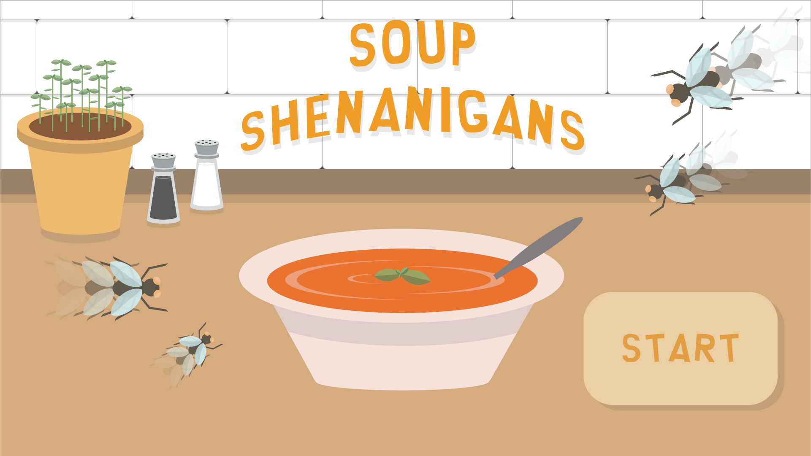
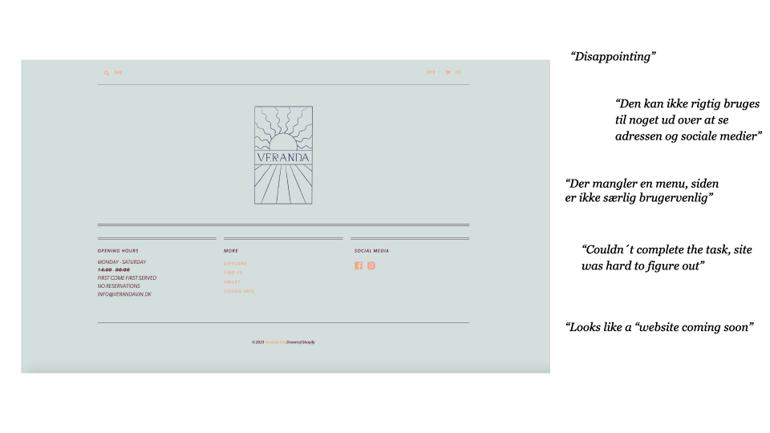
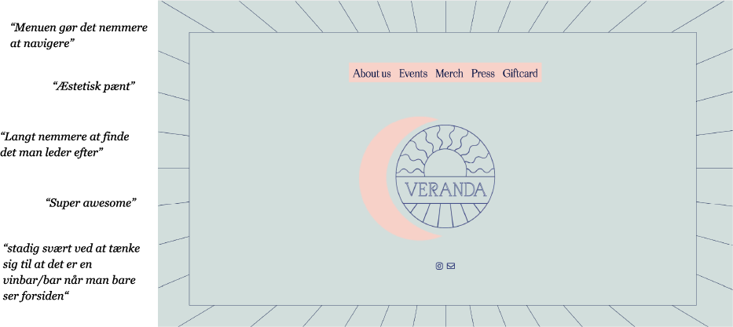

Portfolio
Disclaimer!
Jeg oplevede i start December at min computer brød sammen, hvilket resulterede i at jeg mistede alt mit arbejde som ikke var uploadet igennem FileZilla. Dette vil sige at jeg ikke har nogle af mine procesdokumenter, noter, skitser og mere. Jeg har gjort mit bedste for at arbejde udenom dette problem, og har inddraget andet relevant indhold udover det ønskede for at forhåbentlig gøre op for mit manglende stof.
Grundlæggende Web
I Tema 2 fik jeg mine aller første værktøj indenfor faget. Dette var blandt andet basal forståelse for HTML og CSS og forskellige designkonventioner og gestaltprincipper.
Jeg fik opgaven af at opsætte et website med fokus på det basale indenfor html og css. Da sidens indhold og layout var bestemt i forvejen, kunne man fordybe sig i hvordan man følger layoutdiagrammer og wireframes ved hjælp af grids og flex og hvordan man laver sitet responsivt ved hjælp af media queries. Mobile-first metoden, layoutdiagrammer og wireframes er noget jeg har brugt meget i de efterfølgende temaer, da det skaber et godt overblik over ens site, og gør det nemmere at gå fra den kreative til den mer praktiske proces.
Grundlæggende UX/UI
I Tema 3 fik vi i opgave at lave et site baseret på en selvbestemt målgruppe. Vi gik generelt meget ind i brug af Figma i dette forløb, især til at lave styletiles og moodboards. Vi lærte også at lave responsive prototyper, som man kan bruge til både visuel vejledning men også til at teste sit site.
I dette tema lærte vi forskellige testmetoder til at teste vores sites brugervenlighed: 5 sekunders-test, tænkehøjt-tests, og lighthousetests. Jeg valgte at bruge de to førstnævnte for at teste min prototype. Her kom jeg frem til at min forside ikke gjorde det klart nok hvad siden handlede om, og at brugeren ikke vidste at der var mulighed for at scrolle ned til mere indhold. Med disse resultater valgte jeg at ændre layoutet på min forside, for at undgå dette problem. Jeg endte med at min forside kun var sitets navn og et baggrundsbillede, og at teksten der tidligere var nederst på forsiden blev rykket til en ny underside. Efter ændringerne udførte jeg endnu en 5-sekunders test og en tænkehøjt test, hvor resultaterne var ændret, og sitet var mere forståeligt for brugeren, og dermed mere brugervenligt.
Når sitet var helt færdigt, afsluttede jeg forløbet med en lighthousetest, hvilket gjorde at jeg kunne optimisere blandt andet sidens hastighed og tilgængelighed ved at konvertere billederne til webp, og passe på at jeg havde tilføjet alternativ tekst ved alle billeder.
Ved hjelp af de testmetoder vi blev givet, forbedrede jeg brugeroplevelsen, hvilket kunne ses i mine resultater fra de forskellige tests.

Animation
I dette forløb lærte jeg at skabe simple CSS-animationer, som jeg derefter ved hjælp af JavaScript brugte til at animere mit helt eget spil. Noget jeg fandt hjalp mig meget igennem processen af at udvikle mit spil, var at bruge console i Inspectoren for at checke at der var hul igennem og at alt virkede som det skulle.
Jeg fik også en introduktion til Adobe Illustrator, hvilket er blevet et meget vigtigt redskab for mig efterfølgende i semesteret. Gennem en lang kreativ arbejdsproces, bestående af blandt andet skitser og papirs-prototyper, valgte jeg den stil jeg følte passede til mit spil, og derfra kunne jeg lave mine helt egne flat-art spil elementer med hjælp af Illustrator.
Dette tema lærte mig at løbende arbejde tværfagligt med design og kodning, hvilket gaf mig et slutprodukt hvor spillets design og funktionalitet komplimenterede hinanden. Det kan ses i blandt andet forgrunden, der er placeret på den måde at det ligner at mine fluer (UI elementer) falder ned i suppeskålen (forgrunden)
Den forståelse for JavaScript og CSS-animationer som jeg fik undervejs i dette tema, er noget jeg også har brugt videre i forløb 5, hvor mig og min gruppe lavede flere animationer for at få elementer til at fremstå med forskellige animationer vi lavede.
Grundlæggende Indhold
Videosite
I starten af tema 5 fik vi i opgave at lave et videosite der indeholdt et videointerview som vi selv planlagde, optog og redigerede. Under undervisningen blev vi præsenteret to hovedsagelige principper indenfor klipning; continuity- og montageklipning. Jeg valgte at redigere mit interview med kontinuitetsklipning, da mit interviewobjekts passion var dans, og vi under indspilningen havde fået mange smukke klip af hendes bacheloropgave som jeg ville bruge som b-rolls.
Da emnet var dans, som jo har meget bevægelse, havde jeg under redigeringsprocessen et stort fokus på at klippe væk i løbet af hendes dans, da hendes krop var i bevægelse men kameraet holdt stille. Dette gjorde at overgangene mellem b-roll og master-shot var blødere for øjet, og jeg undgik jumpcuts.
Virksomhedssite
I afslutningsopgaven på første semester var målet at lave og pitche et re-design af en eksisterende virksomheds hjemmeside. Under dette forløb trak min gruppe tråder fra det vi havde lært i de tidligere forløb for at komme i mål. Processen foregik sådan:
Efter at have fundet og taget kontakt til en virksomhed tog vi udgangspunkt i de researchmetoder vi fik i tema 3, hvor vi gennem et interview med vores kontaktperson, Peter, fandt vores formål og målgruppe for sitet. Derefter lavede vi product research på andre mindre vinbarer i området, og et mere generelt trend research for at få inspiration til hvordan vi ville designe vores site. Ud fra de metoder vi brugte under vores researchfase, kunne vi så lave et første udkast af et moodboard, et styletile og prototyper.
Når vi var sikre på vores design, oprættede vi et GitHub repository, så vi alle i gruppen kunne arbejde sammen på at komme i gang med at kode sitet.
Da vi havde med et redesign at gøre, syntes vi det var vigtigt at udføre tests både på det eksisterende- og på vores redesignede site. Vi udførte 5-sekunders tests og tænkehøjt-tests, som vi alle var bekendt med fra tema 3. Derudover valgte vi også at udføre BERT-tests på begge sites, hvor resultaterne viste at vores redesignede version blandt andet så mere ”færdig” ud, og var nemmere at navigere som bruger.
 